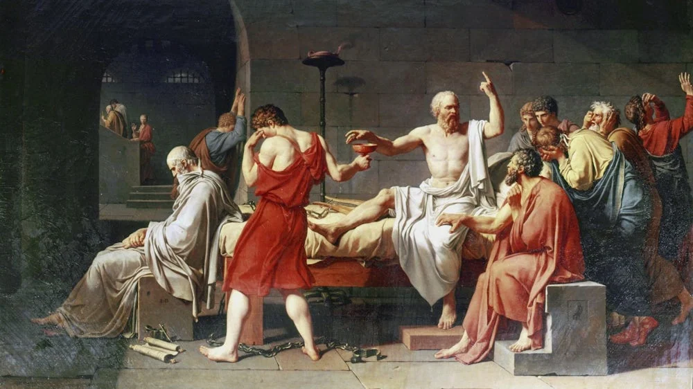

Antik Felsefe
Sokrates Neden Ölüme Mahkûm Edildi?
MÖ 399’da Atina’da yargılanan Sokrates, gençleri yozlaştırmak ve kentin tanrılarını tanımayıp yeni tanrısal varlıklar öne sürmekle suçlandı. Suçlamaların siyasi ve toplumsal bağlamı tarihçilerce tartışılır; sorgulayıcı tavrının tek başına “asıl neden” olduğunu kesin biçimde söylemek mümkün değildir. Mahkûmiyetinin ayrıntıları Platon’un diyalogları başta olmak üzere antik kaynaklardan bilinir. [1, 2]
Platon'un Mağara Alegorisi Neyi Anlatıyor?
Platon, Devlet’in VII. kitabındaki mağara benzetmesiyle eğitim, görünüş ve bilgi arasındaki ilişkiyi tartışır. Zincirlenmiş insanların gölgeleri gerçek sanması, benzetmenin bir parçasıdır; mağaradan çıkış ise eğitimin ve kavrayışın dönüşümünü simgeler. Medya veya propaganda ile kurulan güncel benzetmeler, Platon’un metninin çağdaş yorumlarıdır. [2]
Aristoteles'in İnsan Anlayışı
Aristoteles’in Nikomakhos’a Etik’teki yaklaşımında eudaimonia (iyi oluş ya da gelişen yaşam), bir ömür boyunca erdeme uygun etkinlikle ilişkilidir; bunu yalnızca anlık mutluluk olarak çevirmek eksik kalır. İnsan ve akıl hakkındaki görüşleri kendi antik felsefe bağlamında değerlendirilmelidir; modern etik tek başına bu düşüncelerden türememiştir. [3]
Diogenes: Fıçıdaki Filozof
Diogenes, antik kaynaklarda Kinik yaşamın sadecilik ve toplumsal uzlaşıları sorgulama yönleriyle anılır. Büyük İskender’in güneşini kapatmamasını istediği anlatısı Plutarkhos gibi sonraki yazarların aktardığı bir anekdottur; doğrulanmış bir konuşma kaydı gibi değil, Diogenes’in bağımsızlık idealini anlatan geleneksel bir hikâye olarak sunulmalıdır. [16]
Stoacılık
Stoacılık Nedir?
Stoacılık, Helenistik dönemde ortaya çıkan ve mantık, fizik ile etiği kapsayan bir felsefe geleneğidir. Epiktetos’un El Kitabı’nın açılışında, bize bağlı olan yargı ve seçimlerle bütünüyle denetleyemediğimiz dış koşullar arasında ayrım yapılır. Bu yaklaşım “her şeyi kabullenmek” anlamına gelmez; antik Stoacı etiğin daha geniş bir parçasıdır. [4]
Marcus Aurelius'un Hayat Dersleri
Roma imparatoru Marcus Aurelius’un Kendime Düşünceler’i, Stoacı etik ve öz değerlendirme üzerine kişisel notlardan oluşur. Metin, yazarın felsefi pratiğine dair birincil kaynaktır; günümüzde kişisel gelişim bağlamında kullanılması ise modern bir alımlama biçimidir. [4, 5]
Seneca'nın Mutluluk Felsefesi
Seneca, Mutlu Yaşam Üzerine adlı eserinde iyi yaşamı erdem ve akılla ilişkilendirir; zenginlik gibi dışsal koşulların tek başına iyi yaşamı güvenceye almadığını savunur. Bu, Seneca’nın Stoacı felsefi görüşüdür; evrensel bir psikolojik yasa olarak değerlendirilmemelidir. [5]
Epiktetos ve Kontrol Dikotomisi
Epiktetos’un El Kitabı, düşüncelerimiz ve seçimlerimiz ile beden, mülk ve başkalarının davranışları gibi bütünüyle bize bağlı olmayan şeyleri ayırt ederek başlar. Bu ayrım Stoacı pratik için bir başlangıç noktasıdır; bütün Stoacı felsefeyi tek başına özetlemez. [4]
Modern Felsefe
Nietzsche Neden Tanrı Öldü Dedi?
Nietzsche’nin “Tanrı öldü” ifadesi, Şen Bilim ve Böyle Buyurdu Zerdüşt’te modern Avrupa’da Hristiyan inancının ve onunla bağlantılı değer otoritesinin zayıflamasını tartışan bir teşhistir. İfadenin anlamı eserler ve bağlam içinde yorumlanır; yalnızca dini bir saldırıya ya da tek bir metafora indirgenemez. [6]
Schopenhauer'ın Karamsarlık Felsefesi
Schopenhauer, İrade ve Tasarım Olarak Dünya’da arzuyu ve tatminsizliği insan deneyiminin merkezine koyan karamsar bir metafizik ve etik görüş geliştirir. Bu, filozofun sisteminin özetidir; insan yaşamı hakkındaki kanıtlanmış bilimsel bir sonuç değildir. [15]
Kierkegaard ve Varoluş Kaygısı
Kierkegaard, kaygı ve seçim konularını özellikle Kaygı Kavramı ve Ya/Ya da’da ele alır; özgürlük ve olasılıklar karşısındaki kaygıyı felsefi ve teolojik bağlamda inceler. Onu varoluşçu düşüncenin önemli öncüllerinden saymak yaygındır, ancak sonraki varoluşçulukla özdeşleştirmek tarihsel farkları örter. [7]
Camus ve Absürdizm
Camus, Sisifos Söyleni’nde absürdü insanın anlam arayışı ile dünyanın bu arayışa yanıt vermeyen sessizliği arasındaki gerilim üzerinden tartışır. Bu, Camus’nün felsefi edebî yaklaşımının özetidir; “evren anlamsızdır” biçiminde basit bir bilimsel iddia değildir. [7]
Zihin ve Bilinç
Bilinç Nedir?
“Bilinç” farklı çalışmalarda uyanıklık, öznel deneyim veya farkındalık gibi anlamlarda kullanılır; bu nedenle tek cümlelik tanım bütün tartışmaları kapsamaz. Bilincin hangi yönlerinin nörobilimsel açıklama gerektirdiği ve öznel deneyimin nasıl kavramsallaştırılacağı felsefe ile bilimde araştırılmaya devam etmektedir. [8]
Özgür İrade Gerçek mi?
Özgür irade tartışması, seçimlerin hangi anlamda kişiye atfedilebileceği ve nedensel belirlenimle bağdaşıp bağdaşmadığı gibi farklı soruları içerir. Nörobilimsel deneyler karar süreçlerinin bazı yönlerini inceler; tek başlarına felsefi tartışmayı sonuçlandırmaz. Bu konuda uyumculuk ve uyumsuzluk gibi birbirinden farklı görüşler vardır. [8]
Simülasyon Teorisi Bir Felsefe Problemi mi?
Simülasyon hipotezi, yaşadığımız dünyanın bir bilgisayar simülasyonu olabileceğini öne süren felsefi bir olasılık tartışmasıdır. Bostrom’un argümanı, bazı varsayımlar altında olası gelecek uygarlıklarının simülasyonları hakkında koşullu bir üçlü seçenek kurar; simülasyonda yaşadığımıza dair deneysel kanıt sunmaz. [9]
Yapay Zeka Bilinç Kazanabilir mi?
Güncel yapay zekâ sistemlerinin öznel deneyime sahip olduğuna dair bilimsel bir uzlaşı veya doğrulanmış bir test bulunmamaktadır. Makine bilincinin mümkün olup olmadığı, bilincin tanımına ve kuramsal varsayımlara bağlı açık bir felsefi ve bilimsel sorudur; olası etik sonuçlar bu belirsizlikten ayrı değerlendirilmelidir. [8, 14]
Düşünce Deneyleri
Theseus'un Gemisi Paradoksu
Theseus’un Gemisi düşünce deneyi, parçaları zamanla değiştirilen bir nesnenin aynı nesne olarak kalıp kalmadığını sorar. Antik kaynaklarda aktarılan anlatı, zaman içindeki değişim ve özdeşlik ölçütlerini tartışmaya açar; tek bir çözüm üzerinde uzlaşma yoktur. [10]
Schrödinger'in Kedisi ve Gerçeklik
Schrödinger’in kedisi, kuantum kuramının matematiksel betimlemesini gündelik ölçekteki bir kediye uyguladığımızda doğan yorum sorununu görünür kılmak için ortaya atılmış bir düşünce deneyidir. Gerçek bir kedinin aynı anda gözlenmiş biçimde iki klasik durumda bulunduğunu gösteren deney değildir. [11]
Trolley Problemi Nedir?
Tramvay problemi, farklı eylemlerin sonuçları ve ahlaki sorumluluk üzerine düşünmeyi sağlayan varsayımsal bir etik örneğidir. Gerçek yaşamda karar vermek için doğrudan bir kural sunmaz; sonuççuluk, ödev etiği ve eylem/ihmal ayrımı gibi yaklaşımların sezgilerini karşılaştırmaya yarar. [12]
Beyin Kavanozda Olsaydı Ne Olurdu?
“Kavanozdaki beyin” senaryosu, deneyimlerimizin bir dış dünya hakkında bilgi sağlayıp sağlayamayacağına ilişkin kuşkucu bir düşünce deneyidir. Senaryonun kurulmuş olması, gerçekten bir beynin kavanozda bulunduğuna dair kanıt değildir; bilgi ve gerçeklik hakkındaki felsefi varsayımları inceler. [13]
Kaynaklar: [1] Stanford Encyclopedia of Philosophy (SEP), “Socrates.” [2] Platon, Apologia ve Devlet, VII. kitap (mağara benzetmesi). [3] Aristoteles, Nikomakhos’a Etik, I. kitap. [4] SEP, “Stoicism”; Epiktetos, El Kitabı, §1. [5] Marcus Aurelius, Kendime Düşünceler; Seneca, Mutlu Yaşam Üzerine. [6] SEP, “Friedrich Nietzsche.” [7] SEP, “Søren Kierkegaard”; A. Camus, Sisifos Söyleni. [8] SEP, “Consciousness” ve “Free Will.” [9] N. Bostrom, “Are You Living in a Computer Simulation?”, The Philosophical Quarterly, 53(211), 243–255 (2003), doi: 10.1111/1467-9213.00309. [10] Plutarkhos, Theseus’un Yaşamı, §23. [11] E. Schrödinger, “The Present Situation in Quantum Mechanics,” Naturwissenschaften, 23, 807–812 (1935), doi: 10.1007/BF01491891. [12] SEP, “The Trolley Problem.” [13] H. Putnam, Reason, Truth and History (1981). [14] P. Butlin ve diğerleri, “Consciousness in Artificial Intelligence: Insights from the Science of Consciousness,” arXiv:2308.08708 (2023), doi: 10.48550/arXiv.2308.08708. [15] A. Schopenhauer, The World as Will and Representation (1818/1844). [16] Plutarkhos, The Life of Alexander, §14.